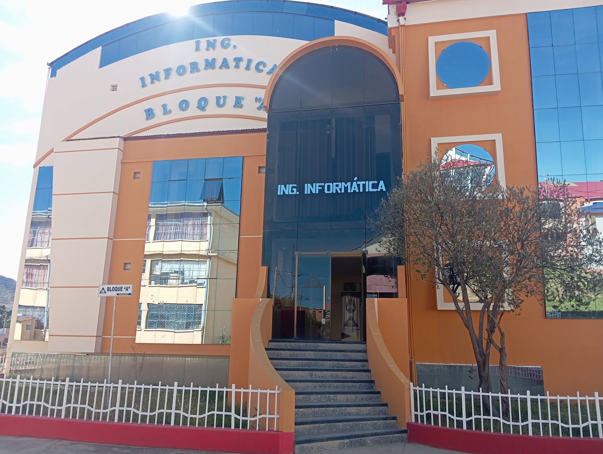
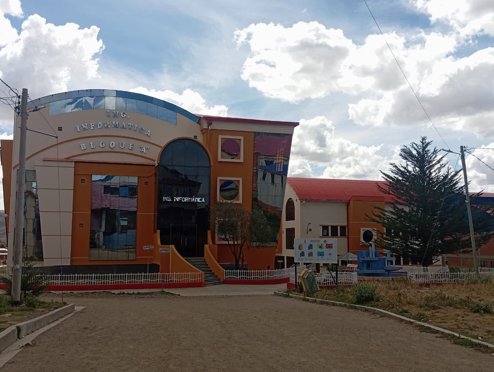
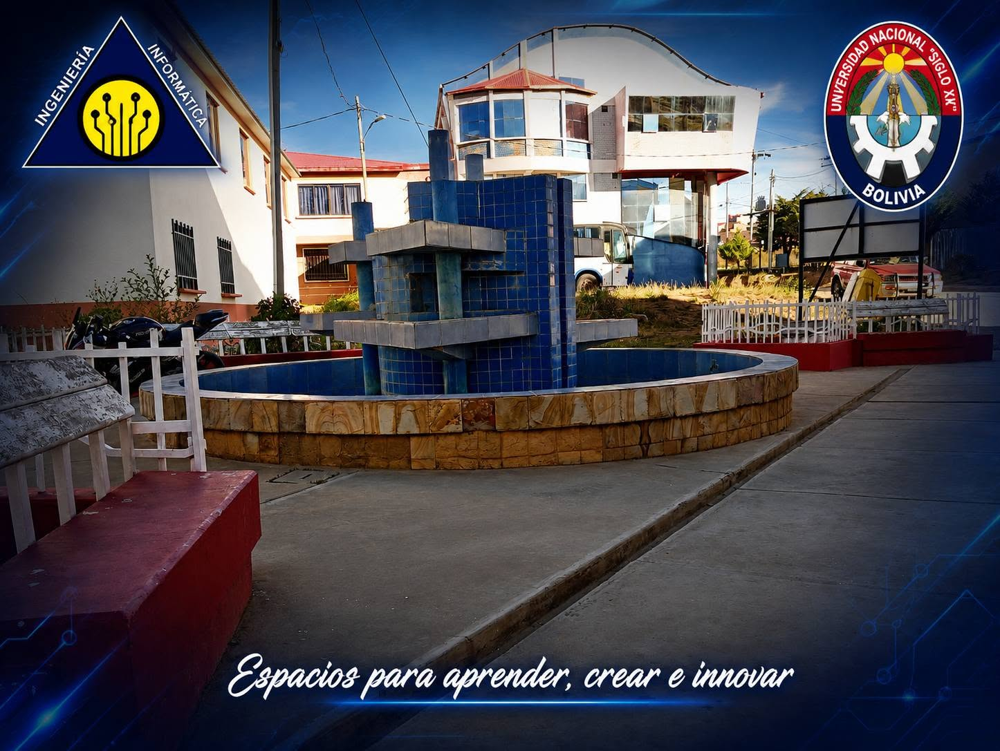
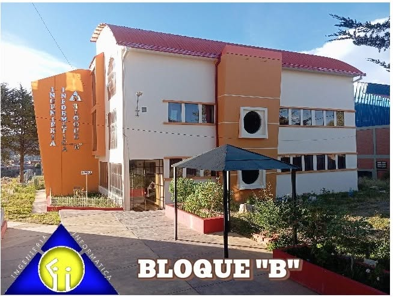
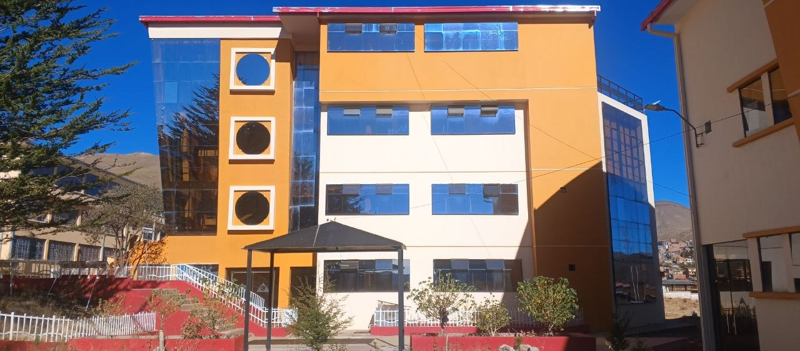
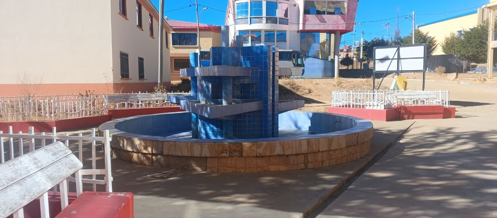
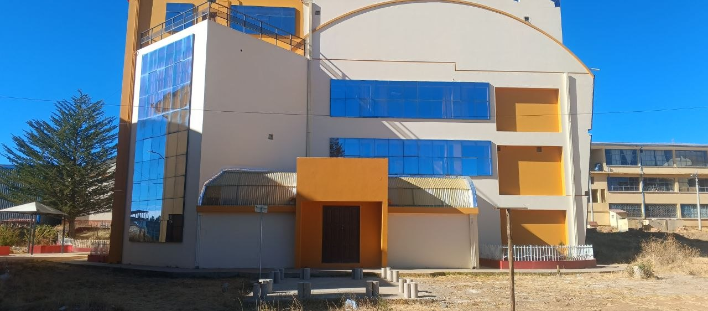
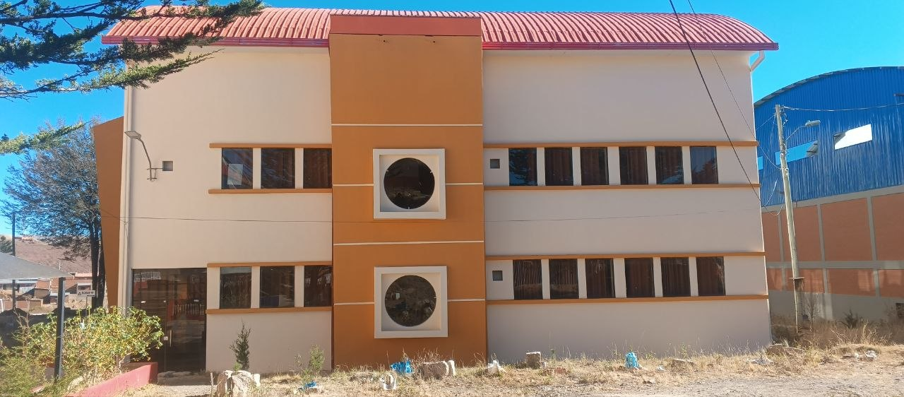
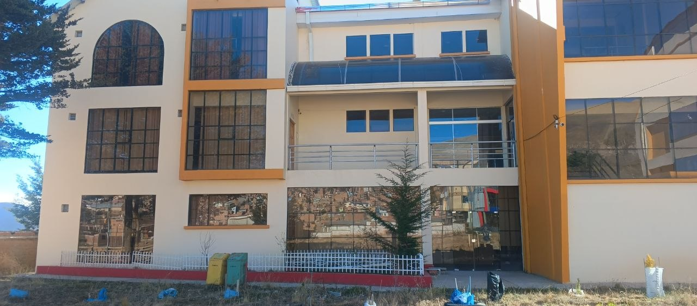

Galería de la Carrera









Fuente de las imágenes:
Algunas fotografías presentadas en esta galería fueron obtenidas de
las publicaciones oficiales de la página de Facebook de la
Carrera de Ingeniería Informática de la Universidad Nacional
"Siglo XX" y se utilizan únicamente con fines académicos e
informativos.